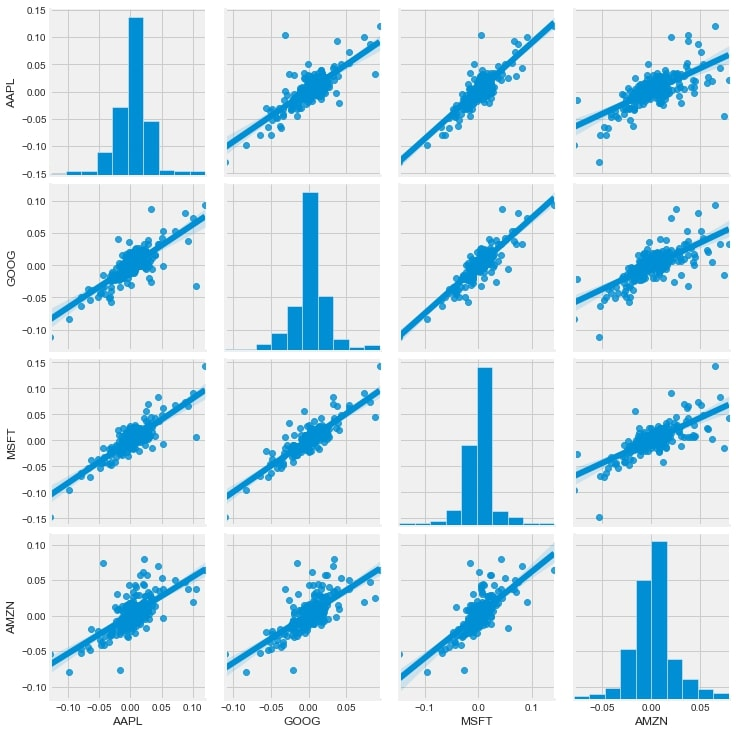
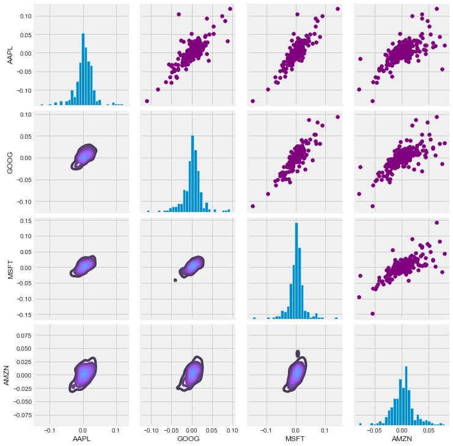
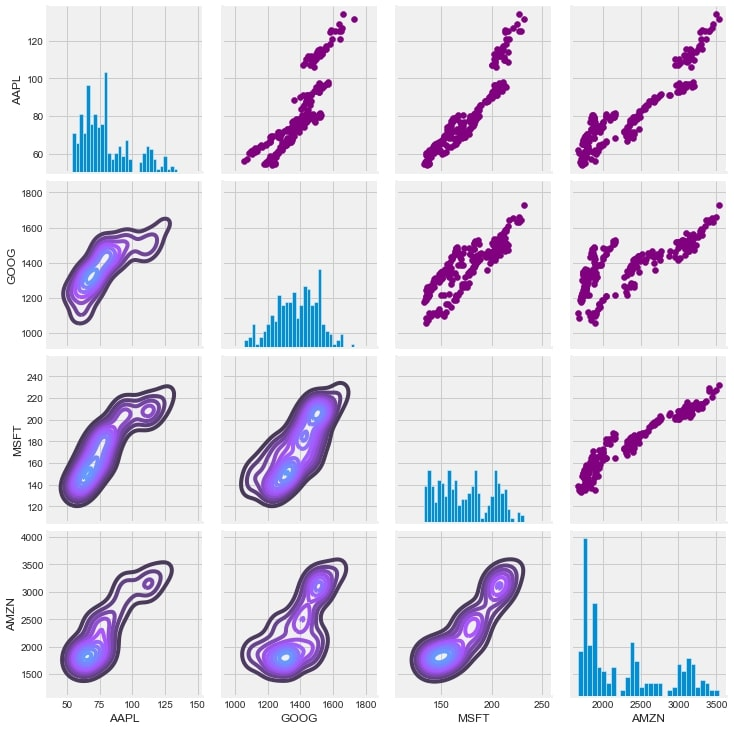
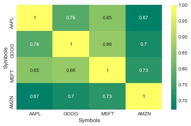

Let's see a historical view of the closing price that we calculated
Now let's plot the total volume of stock being traded each day
Now we will take in consideration the moving average for 10 days, similarly 20 and 50 days.
Then we'll plot the daily return percentage
We can simply call pairplot on our DataFrame for an automatic visual analysis of all the comparisons

Set up our figure by naming it returns_fig, call PairPLot on the DataFrame
Using map_upper we can specify what the upper triangle will look like.
We can also define the lower triangle in the figure, inclufing the plot type (kde) or the color map (BluePurple)
Finally we'll define the diagonal as a series of histogram plots of the daily return

Set up our figure by naming it returns_fig, call PairPLot on the DataFrame
Using map_upper we can specify what the upper triangle will look like.
We can also define the lower triangle in the figure, inclufing the plot type (kde) or the color map (BluePurple)
Finally we'll define the diagonal as a series of histogram plots of the daily return

Let's go ahead and use sebron for a quick correlation plot for the daily returns

Predicting the closing price, stock price of Microsoft